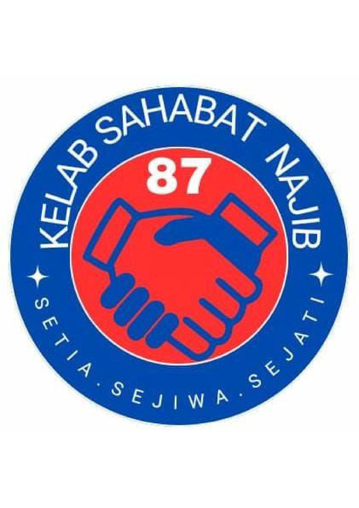
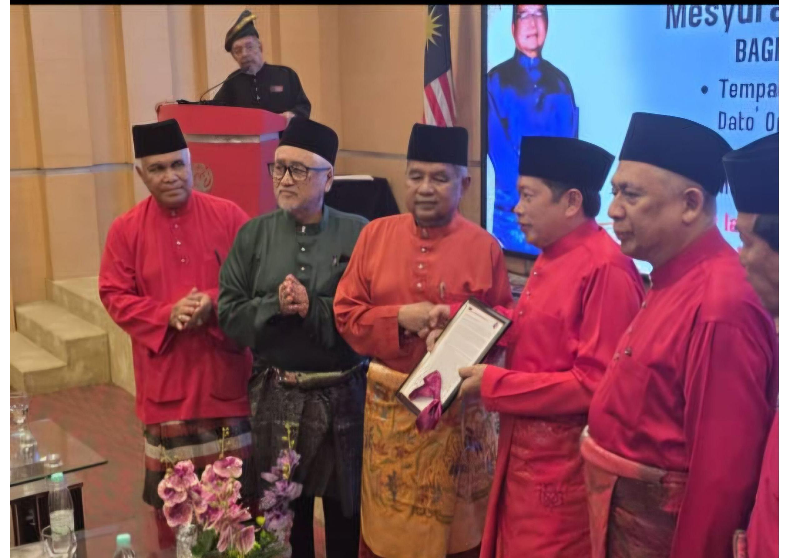
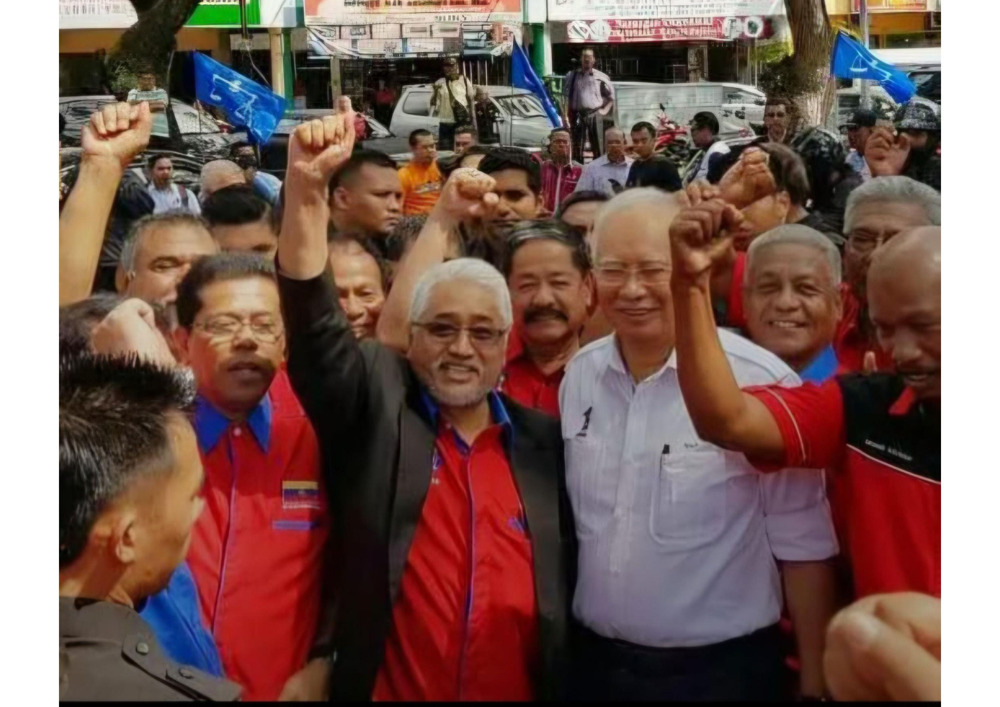

KELAB SAHABAT NAJIB N87 MALAYSIA
TAHANAN RUMAH DATO' SRI NAJIB TIDAK WAJAR DITANGGUHKAN HANYA KERANA ISU INTERPRETASI UNDANG-UNDANG
Kelab Sahabat Najib N87 Malaysia menyatakan bantahan terhadap tindakan menangguhkan pelaksanaan tahanan rumah terhadap mantan Perdana Menteri, Dato' Sri Mohd Najib Tun Abdul Razak, setelah beliau menyelesaikan pembayaran denda sebanyak RM50 juta seperti yang ditetapkan.
Pada pandangan kami, apabila syarat pembayaran denda RM50 juta telah dipenuhi, pelaksanaan tahanan rumah seperti yang diperkenankan melalui Perintah Pengampunan Bersyarat oleh Yang di-Pertuan Agong pada 18 September 2026 sewajarnya dilaksanakan tanpa kelewatan yang tidak munasabah.
Kami berpandangan bahawa persoalan interpretasi undang-undang berhubung Perintah Pengampunan Bersyarat dan kesan Perintah Pelepasan Mahkamah merupakan perkara yang boleh diteliti serta diperjelaskan melalui saluran perundangan yang sewajarnya.
Bagaimanapun, persoalan tafsiran tersebut tidak seharusnya dijadikan alasan untuk menangguhkan pelaksanaan hak yang telah diperkenankan melalui proses pengampunan diraja, khususnya apabila syarat pembayaran denda RM50 juta telah pun diselesaikan.
Kami ingin menegaskan bahawa soal pembayaran denda, baki hukuman penjara dan kaedah pelaksanaan tahanan rumah perlu dilihat secara jelas berdasarkan kandungan sebenar Perintah Pengampunan Bersyarat. Tahanan rumah bukan bermaksud seseorang itu terlepas daripada hukuman, sebaliknya merupakan kaedah menjalani baki hukuman sebagaimana yang diperkenankan.
Kelab Sahabat Najib N87 Malaysia turut menegaskan bahawa institusi Yang di-Pertuan Agong dan Lembaga Pengampunan merupakan institusi yang mempunyai kedudukan serta kuasa yang diperuntukkan oleh Perlembagaan Persekutuan. Justeru, setiap keputusan pengampunan yang telah diperkenankan hendaklah diberikan penghormatan dan dilaksanakan menurut lunas undang-undang.
Sehubungan itu, kami mendesak Peguam Negara supaya:
- Mempercepatkan penelitian dan penjelasan berhubung isu interpretasi Perintah Pengampunan Bersyarat.
- Mengambil langkah segera bagi memastikan pelaksanaan tahanan rumah Dato' Sri Najib selaras dengan perintah pengampunan dan perintah mahkamah yang berkaitan.
- Tidak membiarkan proses penjelasan undang-undang berlarutan sehingga menjejaskan pelaksanaan keputusan yang telah diperkenankan.
Kami tidak mempertikaikan keperluan mematuhi undang-undang. Sebaliknya, kami mahu undang-undang dilaksanakan secara adil, konsisten dan tanpa sebarang kelewatan yang tidak munasabah.
Jangan sampai persoalan interpretasi undang-undang menjadi penghalang kepada pelaksanaan sesuatu keputusan yang telah melalui proses pengampunan diraja.
Dato' Sri Najib berhak mendapat pelaksanaan keputusan pengampunan tersebut berdasarkan peruntukan dan syarat yang telah ditetapkan.
Sekian.
DATO' SERI ABDUL RAHMAN BAKAR Presiden KELAB SAHABAT NAJIB N87 MALAYSIA
GALERI GAMBAR



Dokumentasi gambar berkaitan kenyataan Kelab Sahabat Najib N87 Malaysia.
Kembali ke page utama - Nanis Communication
Kembali ke halaman utama - Nanis Communication